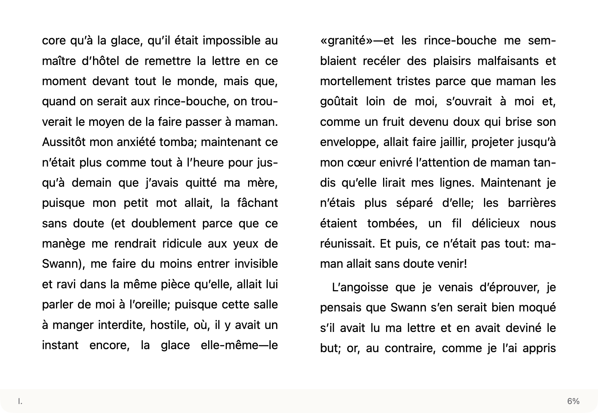
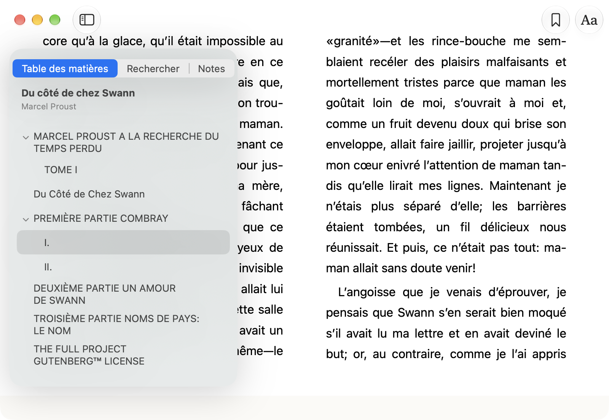

Lecteur d’ebooks open source pour Mac · EPUB · MOBI · AZW3 · PDF · FB2 · CBZ
Double-cliquez pour lire. Fermez pour partir.
Un livre, une fenêtre. Pas de bibliothèque, juste votre page.
Lecteur d’ebooks open source pour Mac · EPUB · MOBI · AZW3 · PDF · FB2 · CBZ
Un livre, une fenêtre. Pas de bibliothèque, juste votre page.

Leaf est un lecteur d’ebooks gratuit et open source pour Mac. Double-cliquez sur un fichier EPUB, MOBI, AZW3, PDF, FB2 ou CBZ pour le lire ; fermez la fenêtre et Leaf quitte. Pas de bibliothèque, pas de copie, pas de compte. Il retient où vous vous êtes arrêté. App native SwiftUI, environ 5 Mo, macOS 15 ou plus récent. Sans lien avec Amazon.
Pas de bibliothèque. Pas de copie. Pas de compte.
S’ouvre comme un document. Quitte quand vous la fermez.
Même après avoir renommé ou déplacé le fichier.
Vrais menus, raccourcis, Rechercher et Traduire, avec le dictionnaire français de macOS. Tout Mac.
Tout est dans les détails.
Estimé d’après votre vitesse de lecture.
Polices, graisse, interlignage et largeur. Césure automatique et texte justifié, comme dans un livre imprimé. Cinq préréglages, plus les vôtres.
Cliquez sur l’appel de note. La note apparaît là, sans quitter la page.
⌘F pour chercher dans le livre. ⌘L pour aller n’importe où.
Surlignages, notes et signets. Export en Markdown ou au format Kindle. Recherche d’un mot en une étape.
EPUB, MOBI, AZW3, PDF, FB2 et CBZ. Sans conversion.
Papier, sépia ou sombre. Huit langues, dont le français.
Appuyez sur ⌘T. Il flotte au-dessus de la page. Rien ne bouge.

Readest en fait le plus. Apple Livres est fourni avec votre Mac. Calibre gère le mieux une collection. Leaf ne fait qu’une chose : ouvrir un livre.
| Leaf | Readest | Apple Books | Calibre | |
|---|---|---|---|---|
| MOBI · AZW3 | ✓ (sans DRM) | ✓ | Non pris en charge | ✓ |
| Ouvrir un fichier | Sur place, sans bibliothèque | Sur place, ajouté à sa bibliothèque | Importé dans sa bibliothèque | Bibliothèque d’abord ; le lecteur peut tourner seul |
| Ce qu’il conserve | Position de lecture, surlignages et signets, dans son propre dossier | Entrée de bibliothèque : titre, chemin, couverture | Une copie dans sa bibliothèque | Base de données de la bibliothèque |
| À la fermeture de la fenêtre | L’app quitte | Continue de tourner | — | — |
| Surlignages et notes | ✓ Export Markdown et format Kindle | ✓ | ✓ | ✓ |
| Autres plateformes | Mac uniquement | iOS · Android · Windows · Linux · Web | iPhone · iPad | Windows · Linux |
| Interface | Native (SwiftUI) | Web (Tauri) | Native | Qt |
| Taille du téléchargement | Environ 5 Mo | Environ 67 Mo | Intégré à macOS | Environ 350 Mo |
| Requiert | macOS 15+ | macOS 12+ | — | macOS 14+ |
| Prix · Licence | Gratuit · GPL-3.0 | Gratuit, cloud payant en option · AGPL-3.0 | Gratuit · propriétaire | Gratuit · GPL-3.0 |
Readest vérifié le 30 octobre 2026 : version 0.12.16 et test de l’app macOS. Apple Livres et Calibre vérifiés le 3 octobre 2026 d’après l’aide d’Apple Livres, calibre 9.15.0 pour macOS et le manuel du lecteur calibre.
Leaf n’est pas notarisé par Apple. Autorisez-le une fois au premier lancement.
Ouvrez Leaf.dmg et glissez Leaf dans le dossier Applications.
Double-cliquez sur Leaf. Quand macOS dit qu’il ne peut pas vérifier le développeur, cliquez sur Terminé.
Dans Réglages Système › Confidentialité et sécurité, descendez et cliquez sur Ouvrir quand même.
Requiert macOS 15 ou plus récent. Les livres avec DRM, comme les achats du Kindle Store, ne peuvent pas être ouverts.
Ou avec Homebrew : brew tap chengffei/tap && brew install --cask leaf.
Gardez les mains sur le clavier.
| Tourner la page | ←→Space |
| Sommaire | ⌘T |
| Chercher dans le livre | ⌘F⌘G |
| Aller à un pourcentage ou un emplacement | ⌘L |
| Réglages | ⌘, |
| Texte plus grand / plus petit | ⌘=⌘- |
| Taille réelle | ⌘0 |
Questions courantes sur l’installation et l’utilisation de Leaf.
Installez Leaf, puis double-cliquez sur le fichier dans le Finder, ou faites un clic droit et choisissez Ouvrir avec › Leaf. Le fichier doit être sans DRM.
Leaf ouvre les fichiers EPUB, MOBI et AZW3 sans DRM, ainsi que PDF, FB2 et CBZ, chacun dans sa fenêtre. Il affiche le temps restant d’après votre vitesse de lecture, les emplacements, des préréglages typographiques, les notes sur place et la recherche dans le livre ; vous pouvez surligner, annoter, poser des signets et tout exporter. Fermez la fenêtre et il quitte. Pas de boutique, pas de compte.
Readest est multiplateforme, avec bibliothèque, synchronisation et lecture à voix haute. Leaf est réservé au Mac et en fait moins, volontairement : pas de bibliothèque, pas de synchronisation, et il quitte quand vous fermez le livre. Il garde votre position, vos surlignages et vos signets dans son propre dossier, jamais dans le fichier du livre. Environ 5 Mo, contre 67 Mo.
Oui. Leaf est gratuit et open source sous licence GPL-3.0.
Leaf n’est pas notarisé par Apple. Ouvrez-le une fois, fermez l’avertissement, puis allez dans Réglages Système › Confidentialité et sécurité et cliquez sur Ouvrir quand même. Une seule fois suffit.
Seulement les fichiers sans DRM. Les livres achetés sur le Kindle Store ont généralement des DRM et Leaf ne peut pas les ouvrir.
Non. Leaf est un projet open source indépendant, sans lien avec Amazon. Il ouvre les fichiers EPUB, MOBI et AZW3 sans DRM sur votre Mac, sans boutique ni compte.
Non. Leaf ouvre les livres là où ils sont, sans les importer ni les copier. Il ne garde que votre position dans chaque livre ; comme toute app de documents Mac, macOS liste les fichiers récents dans Fichier › Ouvrir l’élément récent.